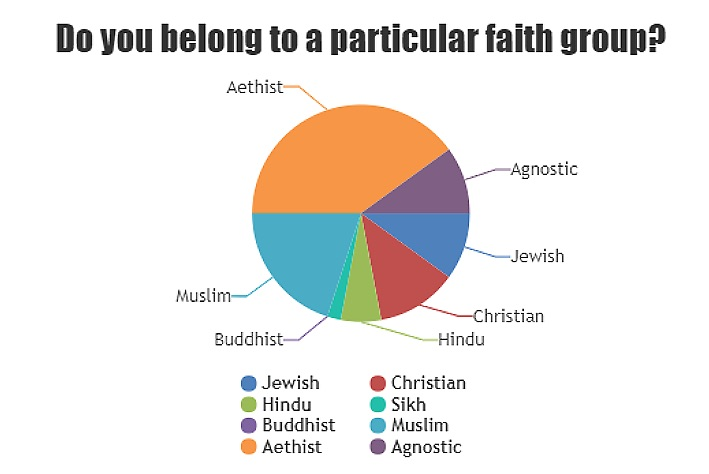
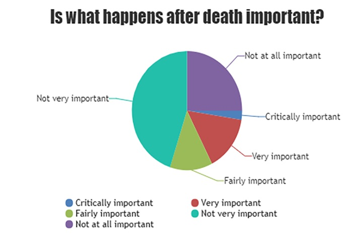

The Big Question
Is There Life After Death?
Why are we looking into death and beyond?
It is the question no on truly knows the answer to. There are many different theories about what happens when we die, it is a topic that not many people think about, but it is something that we all have in common. As time has progressed, the overall belief of what happens when we die has changed in society.
As England has become more heterogeneous, there is no one-set belief system in place. Many different religious groups provide their own ideas on what happens when we die, and we will be exploring these later on.
History
How have attitudes to death changed over time?
Society is in a constant state of flux, and opinions on death have changed over time. When religion was the focal point of life, there was a level of certainty about what happened after death. Gradually, however, this definity over our posthumous fate has disappeared.
The timeline below charts how opinions on death have changed over the last few thousand years, and what different historical societies believed regarding death.
With death being discussed as an idea, it is hard to forget it is also a harsh reality. It is very easy, when discussing death, to focus so much on what comes after death that we forget the pain and sorrow that come to those left behind.
Sheffield has faced many periods of extensive death and destruction, and many lives have been lost.
Below are three infographics talking about some of Sheffield’s biggest losses of life, and some figures that go some way towards contextualising the losses that this city has faced.
Religion
Different religious views
For many people, even in a modern society, what happens after death is predominantly derived from what their religious texts say. Religion is arguably less prevalent in society, however the vivacity with which religious individuals follow their belief has not faded.
We spoke to important members of five major faith groups in Sheffield to discuss where their beliefs sit in the 21st century.
Graveyards
Why is the ritual of burials so popular in soceity?
There are over 20 Graveyards in Sheffield, and despite a drop in religious interest in the last few decades, people continue to bury their dead and erect monuments in their memory.
For many, religion and graveyards are not synonymous, and they are a method of remembering loved ones who have passed.
Below, is a detailed map highlighting Sheffield’s main graveyards, and their key features:
Extensive research has been carried out into both the geographical and sociological place that graveyards hold in the modern world.
We spoke to Andy Clayden, senior lecturer at the University of Sheffield, who research focuses on cemetery landscapes.
Why do you feel that graveyards, and respecting the dead, is such an important part of our culture, particularly at a time when religious belief is fairly low?
Not necessarily a question of religious belief. Traditionally we would have recycled the burial space in our churchyards and therefore in many cases graves were not permanent. It is only since the 1850s and burial reform that cemeteries provided burial for in-perpetuity that graves have become ‘more’ permanent. Also for many religions, the body is immaterial after death
Do you think graveyards will ever give way to a more space and time-effective method of 'dealing' with the dead? If yes, does that point to a lack of continued respect for the dead?
It already has - cremation. Although slow to become widely accepted in the UK, cremation now accounts for approximately 70% of all disposals. You might reflect on how this has changed within your own extended family and if this has any relationship to a perceived lack of respect’. I don’t think it does; many of the customer and rituals still continue.
Is the effort we go to with regards to giving our recently departed big ceremonies indicative of a general belief that when we die there is something after that?
It maybe for some and not for others - I don’t know and probably not related. I think it is more likely a reflection of changes in society and growing sense of individual identity and the importance of “celebrity’. Perhaps also in the absence for some of a religious framework or understanding of how ritual was traditionally observed it is more a bout the ‘celebration’ of a life.
Society
Has todays secular society affected these beliefs on death?
As we have explored, there continues to a wide range of beliefs in what happens when we die. Many religions have staple beliefs that have developed as society’s wider beliefs have.
We asked 40 people three questions to discover whether soceity was in fact largely secular and whether this has affected the beliefs on life after death.
From our survey, we found that a majority of the respondents believed in a strand of the afterlife, or reincarnation. Some respondents who did not identify as religious believed in the concepts of Heaven and Hell whilst other believed that nothing happens once we die. Although some people may not be religious, they tend to find comfort in knowing that they will have peace when they die, or that their energy will be take somewhere else.
In our survey, we asked people with different religious beliefs what they believed happens when we die. People from a variety of different religions answered our survey. Half of our respondents were religious, and the other half were non-religious. This reflects the fact that our society is becoming more heterogeneous, that people are able to prescribe to any kind of religious belief they want.
Finally, we asked respondents how these beliefs affected them. A majority of the respondents said that they did not find these beliefs to be incredibly important, or that they affected their everyday decisions. This reflects the declining religious belief in society. However, those who are religious do believe that these ideas are important and influence their day-to-day lives.
Conclusion
As we have explored, there continues to a wide range of beliefs in what happens when we die. Many religions have staple beliefs that have developed as society’s wider beliefs have. As our survey showed, many people who are not religious believe in an afterlife, possibly due to this country’s past primarily Christian beliefs.
We also found that a majority of people felt that their beliefs in the afterlife were important to them and affected the decisions that they made in their day to day life. Therefore, it is clear to say that beliefs in what happens when we die are still of grave importance to society. These ideas affect our day-to-day decisions and attitudes towards death as a whole.